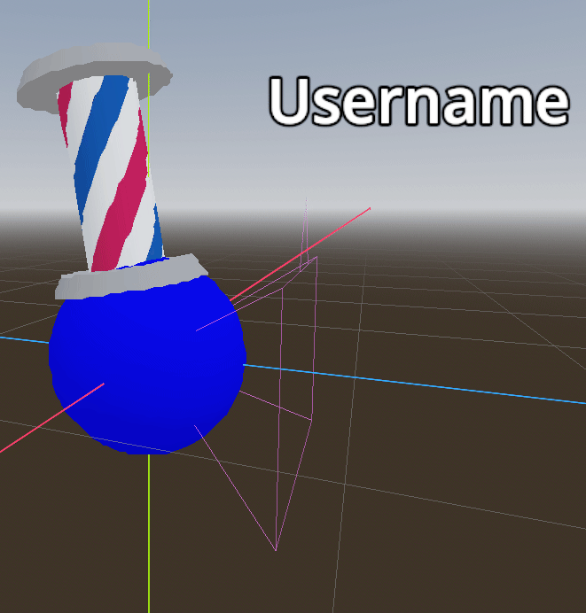

theglitchha is an independent developer.
Mainly uses Godot to create games for cool people only.
theglitchha is an independent developer.
Mainly uses Godot to create games for cool people only.

I have worked on a lot of projects in the past, many of which have not turned out.
I see this as a very good thing. Why? Because rather than working on a ton of projects at once, I effectively narrowed down which ones did not motivate me as much, or which ones simply weren't interesting enough.
The projects that didn't work out were good learning experiences, however,
and I wouldn't be where I am without them.
You can think of game dev
like a staircase, but the stairs progressively get taller proportional to
the stair below it. An example of this idea would be if the stair below
you is 1/2 feet tall, then the stair you are standing on is 3/4 feet tall,
and the stair above you is 1 foot tall. Something like where you'd have to
lift your leg up even higher than it took to step up the previous stair.
The idea is that it takes a lot of practice. The stair below you helps prepare you for the stairs ahead.
I do remember my first idea for a game. It was about a spacecraft prison that crash-landed, and you play as one of the surviving prisoners, trying to rebuild the ship and gather resources. There were many attempts at this game idea. I had even made an entire soundtrack for it (it wasn't very good.)
I could talk about game dev all day. But that's not the point.
You came to see cool game. I do have game to show you, but it's up to you to decide if game is cool or not.
I'm going to keep it short for this one, because I've had to describe it a lot as of recently.
Basically, it's just a little fun game you'd play with your friends. It's based around 52 card games, hats, and silly spheres.

Maybe in the future when I have nothing to do I'll make a dedicated page for this game...
If you want to know more about this game, you can either check my YouTube, or join our Discord. At the time of writing, I'm doing an alpha test for this game, so do join the Discord if you're interested.
This one's quite interesting, actually. This is Graham:
He always seems to be getting involved in space situations.
There are two planned games to feature Graham. He has practically become my main IP even though he has no released games. I'll list both of them in canonical order.
The Worlds Above is a turn-based RPG based around the idea of Graham's suit (Why, yes, of course he wears a suit, how else would he be alive in space?).
It is very likely that this game will release after the second entry in the series. A little confusing, but think of this game as the prequel.
The Adventures of Graham is a metroidvania heavily inspired by old Game Boy games.

Technically, when I thought of and made a prototype of this game, this is when Graham was first created. This probably won't be the longest game ever. Metroidvanias are in my top three favorite game genres, they're very addicting to me. One thing I do love about them in particular is finding something you don't know, learning what it is later in the game, and then being able to go back to it and discover something new.
I am trying to refrain from spoiling anything, so that's the reason for my descriptions of this series being short.
I love Graham dearly, so much so that I very recently (somewhat) learned how to 3D model, and my first model I made was of him:
Yes, I know it's very rough, and I'd actually go as far as to say it's bad, but it's a start I guess...
Uh, anyway, I have nowhere to direct you if you want to know more about these games. There hasn't even been an official announcement about these games' releases, so it could be a bit... or not. I don't know. Once again I'm going to shamelessly plug my Discord into here. I update far more frequently there than anywhere else.
I know what you must be thinking. What is a tool? That's not a game.
Well, actually, the idea of FPS Tool is that it is a framework. It is a multiplayer first-person shooter system. I plan on turning it into a game when it is finished, of course under a different name though. I started this not too long ago, and I'm having a blast working on it.

The kicker is that it is quite bland in its current state. There are a lot of systems in place for different things, such as loadouts, guns, gun attachments, game modes, parkour, etc. There were just multiplayer-related issues that took priority, so I haven't got to implement game modes yet. Therefore, there is nothing to do while testing the game except test game mechanics, which gets boring fast.

I have a devlog for this game on my YouTube. The first two videos aren't the greatest, but I'm going to try to improve with ones after.
You can view more information about this game here.